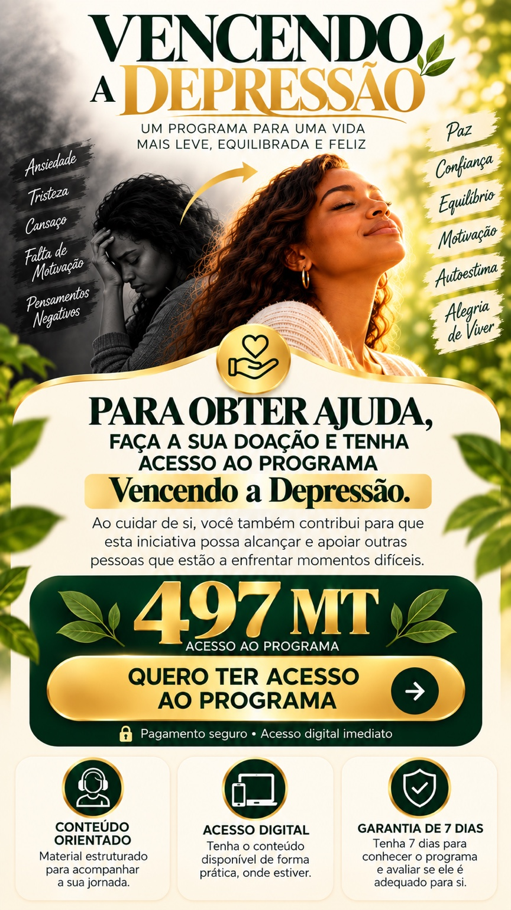

UM PASSO DE CADA VEZ
Você não precisa
continuar a
viver assim.
Existe um caminho para voltar a sentir leveza, equilíbrio e vontade de viver.
▶ DESCUBRA O PROGRAMA ↓O PRIMEIRO PASSO
Assista até ao fim. Pode ser o primeiro passo para uma mudança.
SOBRE O PROGRAMA
Não é sobre fingir
que está tudo bem.
É sobre começar a
cuidar de si.
“Vencendo a Depressão” foi pensado para quem está cansado de carregar tudo sozinho e quer encontrar orientação, ferramentas e um caminho mais leve para enfrentar dias difíceis.
Pequenos passos também são progresso.
UM CAMINHO01 — 09
SE ESTÁ PRONTO PARA COMEÇAR
O seu próximo passo
pode começar hoje.

QUERO TER ACESSO AO PROGRAMA ↗Pagamento seguro · Acesso digital imediato